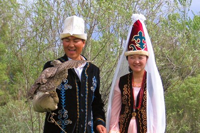
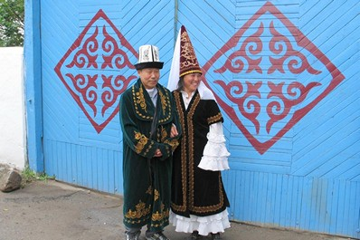
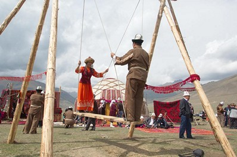

Традиции свадеб в Кыргызстане
Следующая страница →В традиционной кыргызской культуре свадьба — одно из важнейших событий в жизни семьи и рода. Торжества часто сопровождаются множеством обрядов: от сватовства (кудалык) до выкупа невесты, свадебного кортежа и праздничного дасторкана.
Перед свадьбой обычно проводится "Короо той" — праздник по случаю приезда гостей. После свадьбы обязательно проходит "Кыз узатуу" — проводы невесты из дома родителей.
В каждой области республики могут быть свои особенности: музыкальное сопровождение, виды танцев, подношения и угощения, наряды и украшения.
Сегодня семья считается основой кыргызского общества, именно поэтому так важны для кыргызов свадьба и отношения между супругами.
В кыргызских семьях принято заботиться друг о друге в нужде или болезни. Внутри семей существует строгая иерархия, а свадьбы традиционно справлялись для того, чтобы поприветствовать нового члена семьи.
Иногда свадьбы планировались еще до того, как дети достигали совершеннолетия, но, само собой, церемонии проводились уже тогда, когда они вырастали. Было принято, чтобы сыновья женились в порядке возраста: первым обзаводился семьей самый старший, последним – самый младший сын. После свадьбы старшим сыновьям было позволено покинуть отчий дом, но младшим, даже после женитьбы, полагалось оставаться, чтобы заботиться о родителях. Существовала иерархия среди сыновей и их жен, например, жена старшего сына имела больше власти, чем жена младшего. Люди женились в довольно молодом возрасте, чаще всего мужчина был на несколько лет старше женщины.
  
Женихи просили руки невесты у её семьи и заранее договаривались о том, какой выкуп за неё отдадут. От семьи жениха к семье невесты посылались лошади, скот, деньги, а также одежда и различное рукоделие. В этом принципиально отличаются свадебные традиции в Кыргызстане от других близких культур: так, в узбекских или уйгурских семьях невеста, начиная с самого детства, сама готовила себе в приданое одежду и рукоделие. Как только переговоры были окончены, и стороны приходили к соглашению, жених дарил невесте серьги, и с этого момента они были официально обручены.
Невеста, придя в дом жениха, стояла в самом низу семейной иерархии, в её обязанности автоматически входила уборка, готовка и забота о детях. Уважение к старшим являлось и является до сих пор важной частью культуры кыргызов, поэтому традиционно глава семьи (его называют аксакал, что буквально переводится как «белобородый») восседал на почетном месте напротив входа в юрту. По одну сторону от него находились его сыновья, а по другую – жена, дочери и невестки. Самая младшая невестка должна была накрывать на стол и заботиться о том, чтобы у всех во время застолья было достаточно еды и питья.
Если в дом приходили гости, им позволяли занять почетное место аксакала. Гости в традициях кыргызов считались подарком небес, а потому с ними обращались особенно уважительно. Любой посетивший Кыргызстан может подтвердить, что гостей встречают очень тепло, не ограничивая ни в чем, угощая едой и предлагая ночлег. Если вы планируете отправиться в гости в кыргызскую семью, можно преподнести небольшие подарки – сувениры или фотографии, привезенные вами из вашей страны.
← Вернуться к карте и регионам